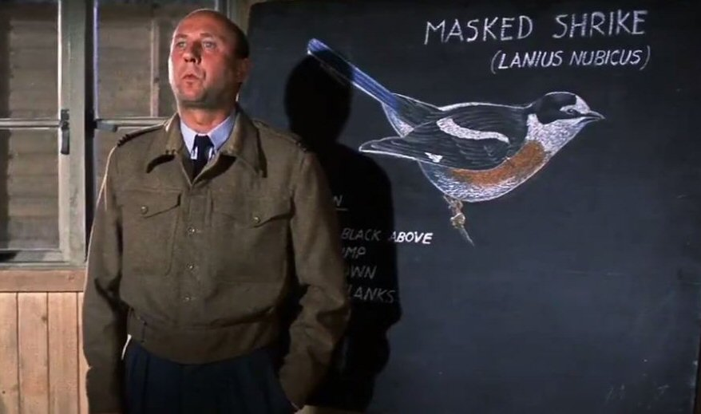

Monday, November the 14th, 2011
back to: title, date or indexes
Yesterday I watched The Great Escape (John Sturges, 1963) on television, and I was struck by a scene about an hour into the film which fatally undermines the plot. Up to that point, we are rooting for the Allied prisoners of war who, as is usual in such dramas, say things like “OK, chaps, let's form an Escape Committee and smoke our pipes”, and we accept their statements that it is their duty to try to escape and to otherwise make life as difficult as possible for their Boche captors.
But then comes the scene where Blythe, played by Donald Pleasence, gives an ornithology lecture to some of the men. He whistles the song of the warbler, and then shows them how to draw the masked shrike. We are asked to believe that sensible British chaps would rather risk gruesome death at the hands of the Gestapo when they could see out the war having bird-life explained to them by eerie-eyed Donald Pleasence. This seems to me utterly implausible, and for all the thrills and spills of the remaining two hours, I think the film would have been much better had it concentrated solely on Blythe's ornithology classes.

Hooting Yard on the Air, November the 17th, 2011 : “Advice Regarding Eggs” (starts around 07:25)